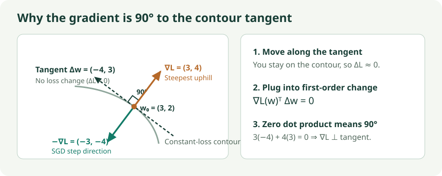

SGD: Learning from Noisy Gradients
Derive the mini-batch update, see where sampling noise comes from, and explore learning-rate stability.
A neural network may have billions of parameters, but one SGD update has a simple contract: estimate the direction in which training loss increases, then move a short distance the other way. The complications come from which examples supplied that direction and how far the step travels.
Backpropagation computes derivatives. SGD uses those derivatives to change parameters. Changing the optimizer does not change the chain rule used to compute a gradient.
1. From a training loss to an update
Let $w\in\mathbb R^d$ collect the parameters, and let $\ell_i(w)$ be the loss on training example $i$. With $N$ examples, the average training objective is
Why is the first-order change in loss $\Delta L\approx\nabla L(w)^\top\Delta w$? Build it in three short steps:
- 1. One parameter (rise $=$ slope $\times$ run): For a single weight $w$, the derivative is $\frac{dL}{dw}\approx\frac{\Delta L}{\Delta w}$. Multiplying by $\Delta w$ gives the change in loss: $\Delta L=L(w+\Delta w)-L(w)\approx\frac{dL}{dw}\,\Delta w$.
- 2. Many parameters (add each coordinate’s change): When we nudge $d$ weights by $\Delta w=(\Delta w_1,\dots,\Delta w_d)$, coordinate $w_1$ changes the loss by $\frac{\partial L}{\partial w_1}\Delta w_1$, coordinate $w_2$ adds $\frac{\partial L}{\partial w_2}\Delta w_2$, and so on:
$$\Delta L=L(w+\Delta w)-L(w)\approx\frac{\partial L}{\partial w_1}\Delta w_1+\frac{\partial L}{\partial w_2}\Delta w_2+\cdots+\frac{\partial L}{\partial w_d}\Delta w_d.$$
- 3. Dot-product shorthand (why the transpose $\top$ is there): Both $\nabla L(w)$ and $\Delta w$ are $(d\times 1)$ column vectors. The transpose $\top$ flips $\nabla L(w)$ into a $(1\times d)$ row vector so row-times-column multiplication writes that entire sum as one dot product:
$$\Delta L\approx\nabla L(w)^\top\Delta w=\begin{bmatrix}\dfrac{\partial L}{\partial w_1}&\cdots&\dfrac{\partial L}{\partial w_d}\end{bmatrix}\begin{bmatrix}\Delta w_1\\\vdots\\\Delta w_d\end{bmatrix}=\sum_{j=1}^d\frac{\partial L}{\partial w_j}\Delta w_j.$$
Now choose $\Delta w=-\eta\nabla L(w)$ with learning rate $\eta>0$. Plugging this in gives $\Delta L\approx\nabla L(w)^\top(-\eta\nabla L(w))=-\eta\|\nabla L(w)\|^2\le 0$. That is why the update rule has a minus sign. It is a local approximation: a large step can leave the region where the local slope is accurate.
Computing the full gradient requires all $N$ examples. SGD replaces it with a sampled estimate. At step $t$, using a batch $\mathcal B_t$ of size $B$:
One example gives classical stochastic gradient descent; a subset gives mini-batch SGD; using the entire dataset gives full-batch gradient descent. In deep learning, “SGD” usually includes the mini-batch case. The loss reduction matters: summing instead of averaging a batch multiplies the gradient by $B$ and changes the effective step scale.
2. Why the gradient is perpendicular to the tangent
A contour line connects points that have the same loss $L(w)=c$. At any point $w$ on a contour, compare two vectors:
- Vector 1 — the gradient $\nabla L(w)$: the vector of partial derivatives $(\partial L/\partial w_1,\dots,\partial L/\partial w_d)$ at $w$.
- Vector 2 — the contour tangent $t$: a small step $(\Delta w_1,\dots,\Delta w_d)$ pointing along the tangent line to the contour at $w$.
Because moving along the contour tangent does not change the loss ($\Delta L\approx 0$), plugging $\Delta w=t$ into the first-order change formula $\Delta L\approx\nabla L(w)^\top\Delta w$ makes the dot product of these two vectors zero:
Therefore, the gradient $\nabla L(w)$—and the SGD step $-\eta\nabla L(w)$—are always perpendicular ($90^\circ$) to the contour tangent $t$.

3. Where the randomness enters
Different training examples pull the parameters in slightly different directions. Any single random mini-batch $g_t$ is noisy, but because every example has an equal $1/N$ chance of being picked, the batch gradient equals the true full-dataset gradient on average:
How much does averaging $B$ examples reduce the noise? Suppose one random example’s gradient has variance $\sigma^2$ (so its typical noise size, or standard deviation, is $\sigma$). For a batch average $g_t=\frac1B(g^{(1)}+\cdots+g^{(B)})$ of $B$ independent examples, two basic variance rules apply:
- 1. Adding $B$ independent terms adds their variances: $\operatorname{Var}(g^{(1)}+\cdots+g^{(B)})=\sigma^2+\cdots+\sigma^2=B\sigma^2$.
- 2. Dividing by $B$ divides the variance by $B^2$ (since variance squares the values):
$$\operatorname{Var}(g_t)=\frac{B\sigma^2}{B^2}=\frac{\sigma^2}{B}\implies\text{Noise (std.\ dev.)}=\sqrt{\frac{\sigma^2}{B}}=\frac{\sigma}{\sqrt{B}}.$$
Because noise shrinks with $\sqrt{B}$, $4\times$ larger batch size cuts the gradient noise in half ($\sqrt{4}=2$), and using the full dataset ($B=N$ without replacement) removes sampling noise completely.
4. Why a large learning rate can explode
Consider one curved direction with loss $L(w)=\tfrac12\lambda w^2$, where $\lambda>0$ measures curvature. Its gradient is $\lambda w$, so a full-gradient step gives
The distance to zero shrinks only when $|1-\eta\lambda|<1$, or $0<\eta<2/\lambda$. If $\eta\lambda$ lies between 1 and 2, the sign flips each step but the oscillations shrink. Above 2 they grow. At exactly 2, the iterate alternates without getting closer.
In multiple dimensions, a quadratic has several curvature directions. Because each gradient step leaves the current contour perpendicular to its tangent, elongated contours direct most of the step across the steepest wall while the sharpest curvature limits the stable learning rate. That same small rate may make progress frustratingly slow in a flatter direction. This is the narrow-valley problem that motivates momentum and preconditioning. This bound is exact for a positive-definite quadratic with full gradients, not a universal safe learning rate for a neural network.
5. Lab: noise and curvature are different problems
To let you test batch noise and valley steepness separately, the lab below runs SGD on a simple 2D bowl with minimum at $w^*=(0,0)$:
- Why single batches are noisy ($8$ offset examples): The dataset has $8$ examples whose individual minimums $a_i$ sit in a small ring around $(0,0)$ (at distance $0.35$ along the axes and diagonals). Picking one example pulls $w$ toward its own offset center $a_i$, but because the $8$ centers cancel out around $(0,0)$, averaging all $8$ examples pulls $w$ straight toward the true minimum $(0,0)$.
- What $\kappa$ and Rotation control (the bowl shape $H$): At $\kappa=1$, the loss surface is a round bowl $\tfrac12(w_1^2+w_2^2)$. Increasing the curvature ratio $\kappa$ makes one direction $\kappa$ times steeper than the other—stretching the bowl into a narrow valley $\tfrac12(w_1^2+\kappa w_2^2)$—and Rotation tilts that valley (captured together by the curvature matrix $H$, so each example’s loss is $\ell_i(w)=\tfrac12(w-a_i)^\top H(w-a_i)$).
- What “excess full loss” means on the chart: Even at the best point $w^*=(0,0)$, the $8$ offset examples still have a small baseline loss $L(0)>0$ because they don’t all share the same center. The chart subtracts that constant baseline and plots excess full loss $L(w)-L(0)=\tfrac12w^\top Hw$, which hits $0$ exactly when $w$ reaches $(0,0)$.
SGD trajectory explorer
Start at $(3,2)$. Each click evaluates a fresh batch gradient and applies one update.
- Isolate noise: keep $\eta=0.04$, compare one sampled row with 16 sampled rows, then select the full dataset. The smaller batch tends to wander more near the optimum.
- Isolate instability: use the full dataset with $\kappa=20$. Compare $\eta=0.04$ with $0.12$. Even perfect gradients cannot rescue the second setting’s unstable sharp direction.
- Remove the narrow valley: set $\kappa=1$. A full-gradient step with $\eta=1$ reaches the minimizer in one update for this particular quadratic.
6. A training loop without hidden scaling
# Plain mini-batch SGD; loss is averaged over the batch.
optimizer = torch.optim.SGD(model.parameters(), lr=0.03)
for inputs, targets in loader:
optimizer.zero_grad(set_to_none=True)
predictions = model(inputs)
loss = criterion(predictions, targets) # reduction="mean"
loss.backward()
optimizer.step()The optimizer reads gradients already computed by backpropagation. Clear them deliberately: PyTorch accumulates gradients into buffers. For $K$ equal-sized microbatches representing one larger batch, divide each mean loss by $K$, accumulate backward passes, and call step() once. Unequal microbatch sizes require weighting by their example counts to reproduce the same average. Batch-dependent layers can still make microbatch training differ from a single large forward pass.
Plain SGD needs no persistent per-parameter momentum or second-moment buffer. It still needs parameters, gradients, and the model’s other training memory. A learning-rate schedule changes $\eta_t$ over training; a smaller late rate reduces stochastic wandering but also slows movement. Monitor validation performance separately from training loss. Low training loss alone does not establish useful generalization.
7. Questions worth answering
Because $-\nabla L(w)$ is perpendicular to the contour tangent at $w$. On an elongated contour, the tangent is tilted relative to the ray to the minimum, so the normal points across the steeper axis rather than toward the minimizer.
No. A noisy gradient can increase full loss, and the evaluated batch may also change. Inspect a consistent evaluation set and the trend. With full gradients on a smooth quadratic and a rate inside its stability interval, persistent growth is a different warning.
There is no universal requirement. Averaging keeps the expected gradient scale unchanged. Batch-size learning-rate rules concern training dynamics, noise, and the number of updates per epoch; they are not needed to correct an averaged gradient’s units.
Loss reduction, gradient clearing, data scaling, learning rate, and a reproducible small run. An adaptive optimizer can change scaling; it cannot repair a wrong gradient or target.
Sources and further reading
Bottou, Stochastic Gradient Descent Tricks develops the stochastic approximation viewpoint. PyTorch’s SGD documentation specifies its implementation options. The worked vectors, contour-tangent orthogonality diagram, quadratic dataset, stability calculation, and interactive experiment above are constructed for these notes.